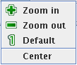

The view menu and its content

The view menu contains operations that change the view of the graph in some way.
The operations that are in the menu are described in the list
below. The list is ordered in the same way as the menu items.
- The Zoom in command zoom the current graph. This
means that the size of everything is increased. If you want to
expand the graph so that the distance of the vertices increases but still
have the same size of the vertices and edges then look at the expand selected by factor command in the operations menu.
- The Zoom out command is the opposite of the zoom in command. It decreases the size of the graph.
- The Default command sets the zoom level to the default.
- The Center command centers the graph in the middle of the window. The center of the graph is the center of least
bounding rectangle that contains all vertices.